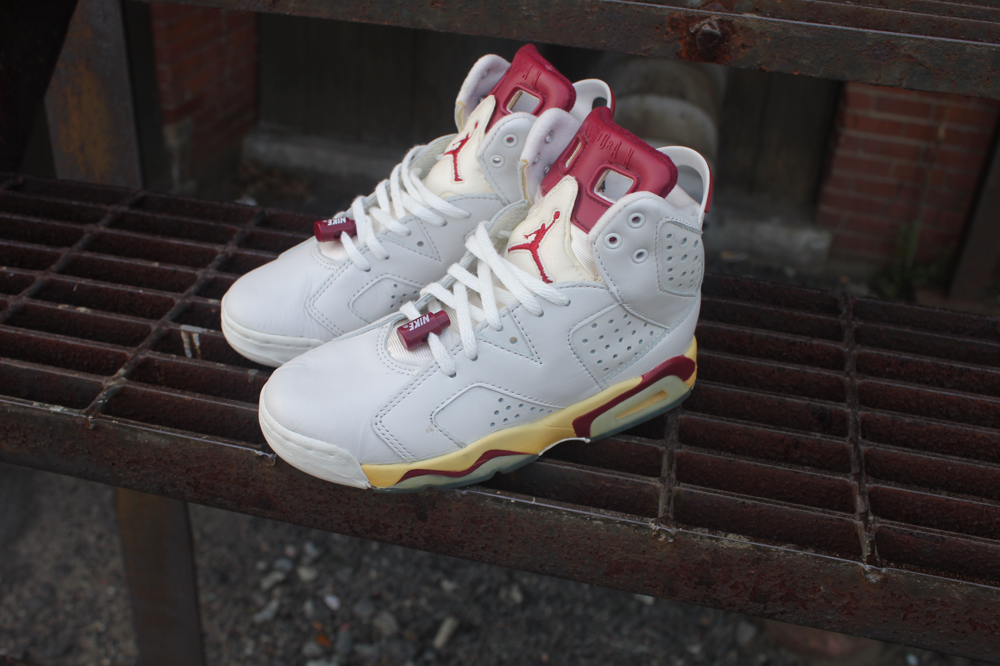
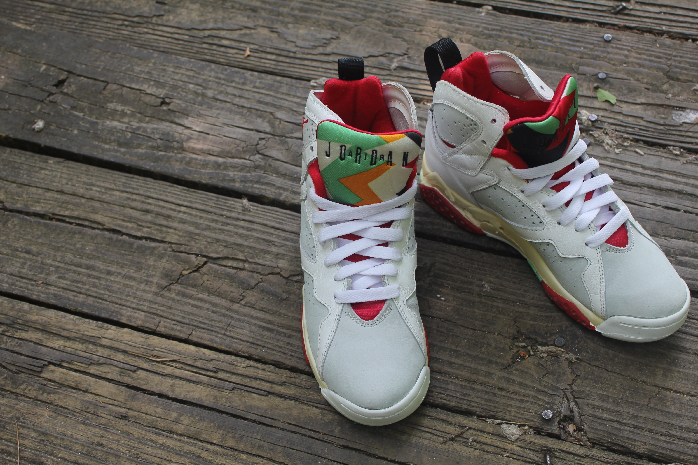
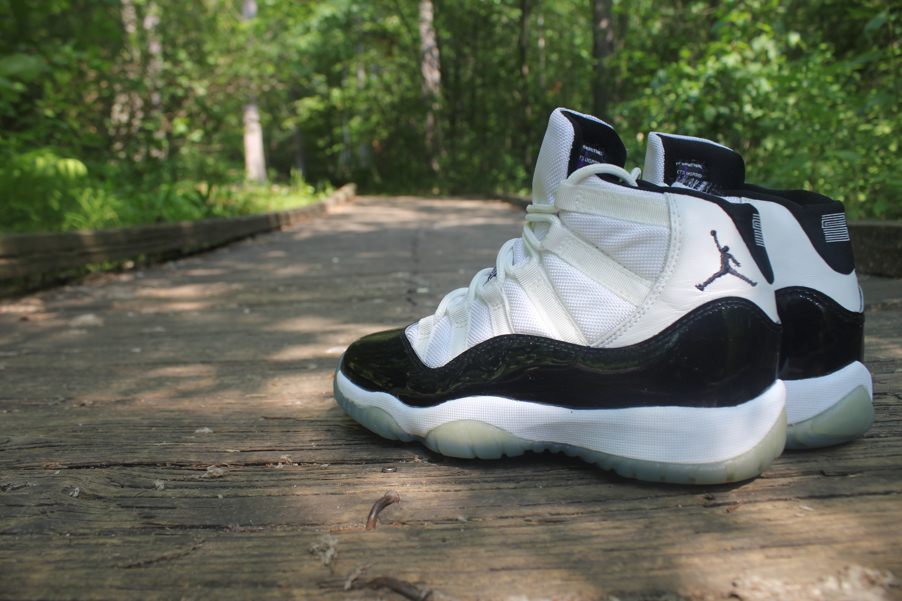

Air Jordan 6 "Maroon"
Original 1991 Release
Dressed in an Off White and Maroon color scheme. The classic Air Jordan 6 features a White leather upper with Maroon accents and a clear outsole. Perforations add for ventilation that is seen throughout the shoe's upper. Other details that will be included in this retro release are the original lace locks that has a Jumpman logo on the top and 'NIKE' on the bottom, as well as OG 'NIKE AIR' branding on the insole and back heel.
Contact for Inquiry

Air Jordan 7 "Hare"
Original 1991 Release
The perfect pairing of Michael Jordan and Bugs Bunny took the world by storm when they teamed together for a Jordan Brand TV commercial in 1992. The two global icons let the world into their friendship, a friendship that has spanned 23 years, six championships and countless threats from the intergalactic cartoon world. The Air Jordan 7 Retro 'Hare' returns in the original colorway from 1992.
Contact for Inquiry

Air Jordan 11 "Concord"
Original 1996 Release
The Air Jordan XI arrived on the scene in 1996, when three colorways of the high-top were introduced, alongside two colorways of a low-cut version known as the "IE."" In 2000, Jordan fans were treated to the I's first-ever retro edition, while women's editions also made their way to market. Rumor has it that the XI was also the reason why Air Jordan Retro releases were moved to Saturdays, as kids often skipped school and cut class to get their hands on a pair.
Contact for Inquiry
